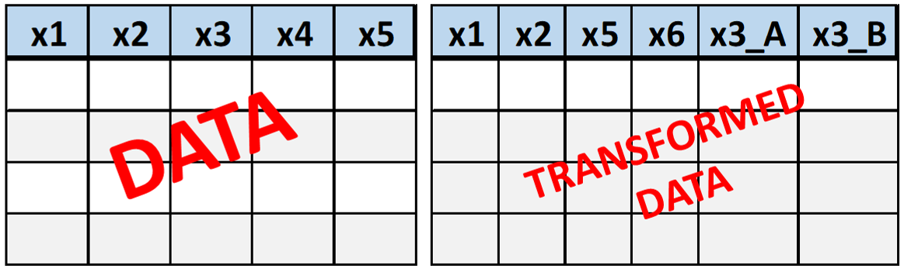
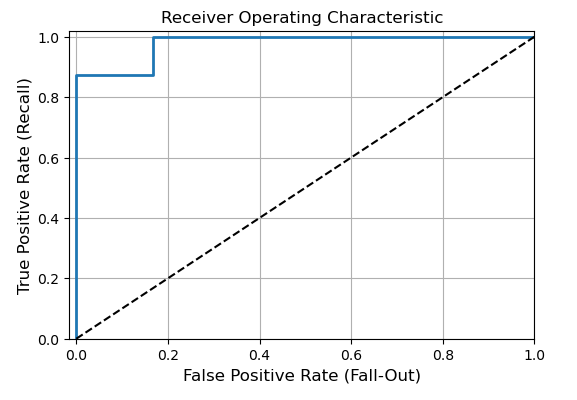
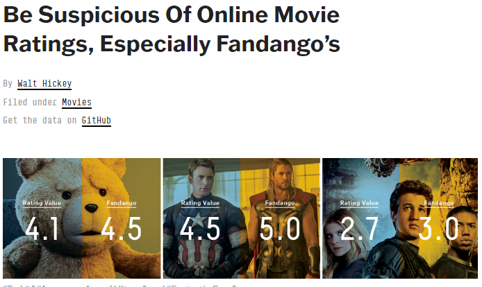
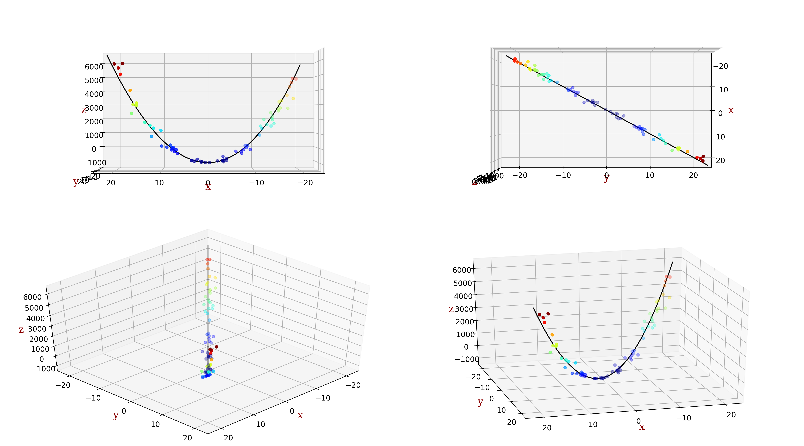
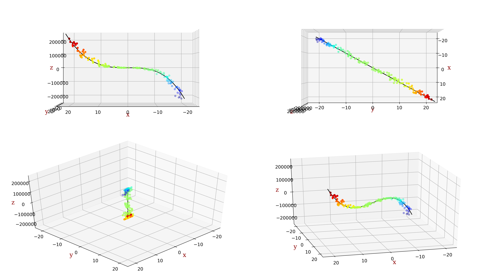
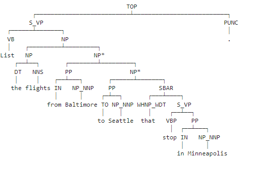

I recently graduated (December 2023) with a Masters in Data Science from Eastern University with a 3.9 GPA.
I am passionate about Artificial Intelligence, Machine Learning, Prompt Engineering and Data Science! Currently open to work.
Demonstrating my knowledge in interpreting and cleaning data in SQL

Created a custom transformation pipeline that
takes in raw data and returns fully prepared, clean data that is ready for model training

Demonstrating my knowledge of popular machine learning metrics.
Demonstrating my knowledge of data manipulation using Lego parts.

Demonstrating my knowledge of data manipulation using Fandango data set.

Perform a PolynomialFeatures transformation, then
perform linear regression to calculate the optimal ordinary least squares regression model parameters.

Perform a PolynomialFeatures transformation, then
perform linear regression to calculate the optimal ordinary least squares regression model parameters.

We will be building a simple parser that is trained from the ATIS (Air Traffic Information System) portion of the Penn Treebank.
The training data consists of short queries and commands spoken by users of a fake robot travel agent.